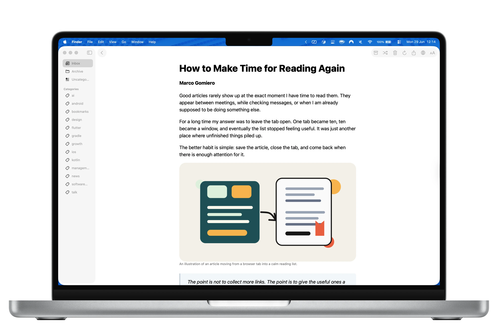
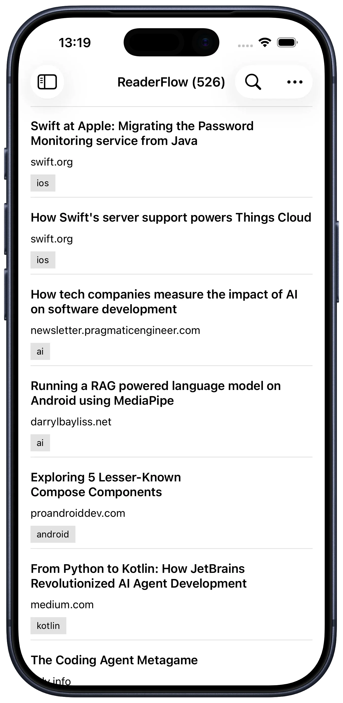
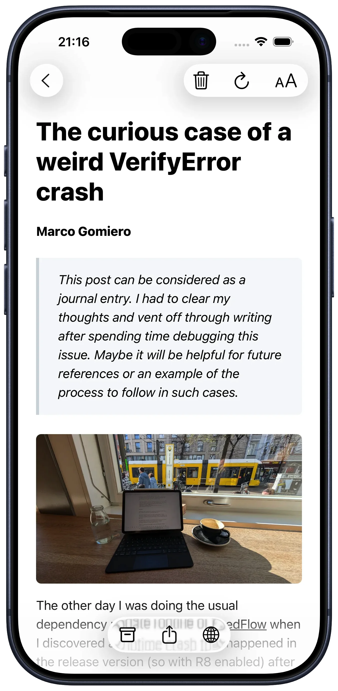

privacy
Cleaned up on your phone, not on a server.
ReaderFlow downloads the page and pulls out the article on your device. There's no reader service in the middle, so nobody else sees what you save.
A read-later app that keeps your articles on your device: clean, offline and private. For iPhone, iPad, Android and Mac.



No feed, no recommendations, no account. Just the things you chose to read, kept somewhere you control.
ReaderFlow downloads the page and pulls out the article on your device. There's no reader service in the middle, so nobody else sees what you save.
The text is stored with the article. Read on a plane or underground, and pick up at the same paragraph next time.
Keep your devices in step through an account you already have. Skip it and nothing leaves your phone.
Sort now or later. Archive what you've finished. Find that piece from March.
readerflow.app/article links open the saved article straight in ReaderFlow on iPhone, Android and Mac.
iPhone, iPad, Android and a native Mac app, with the same features on each.
New on Mac
The Mac app includes a readerflow command. Save links from scripts, list what's waiting, and print any article as clean Markdown.
--wait returns once the text is ready.unarchive brings it back.Works with AI agents. Install the ReaderFlow skill and your agent can save links, summarize what's waiting, and tidy up your categories. Every command has a --json mode.
Install from ReaderFlow → Settings → Command Line. macOS only.
Import
Export a CSV from your old read-it-later app and drop it in. ReaderFlow works out the columns by itself. Only the URL is required.
On iPhone, iPad, Android and Mac.